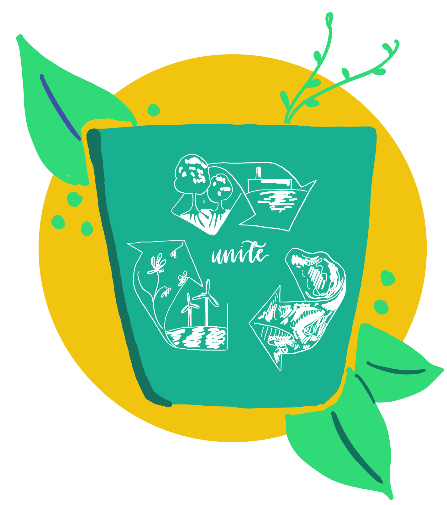

Remember back in 2019 when the so-called ¨VSCO girls¨ made a huge deal about not using plastic straws to save the turtles? They weren’t wrong….this is a problem that affects more and more innocent animals every year. Last year, 100 million marine animals lost their lives to plastic humans had carelessly discarded. This includes plastic straws, filters, packaging, and grocery bags. It is time for the world as a whole to change that statistic. Fortunately, there is an alternative for each of these harmful plastics that we habitually use so often. That’s all it is really...a bad habit that can be broken.

This article will give you three eco-friendly plastic alternatives under twenty dollars!
The vast majority of plastic used in society is for one thing: convenience. In the time you can open the packaging of a case of plastic bottles, you can fill up a reusable one. Take those extra five seconds to help the environment, you will not regret it.